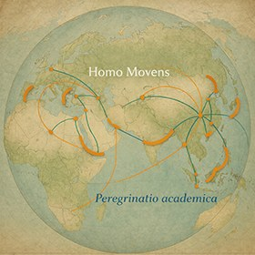
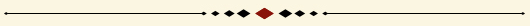
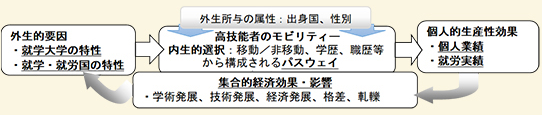
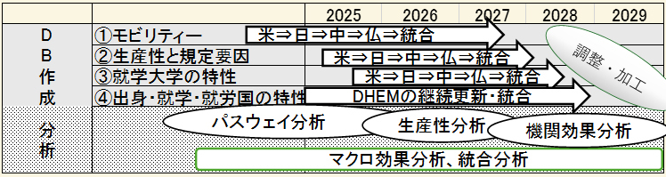

旅する自然科学者ヨハン・シュック（1576-1630年。ラテン語名ヨアンネス・テレンティウス、中国語名鄧玉函）。学問の旅で多くの大学で学び、ガリレオ・ガリレイにも師事した。ヨーロッパ各地で活動したが、1611年にイエズス会に入り、中国への宣教団に加わり、北京でイエズス会の図書館の創設に尽力した。徐光啓の推挙で、明朝の暦法改革にも関与した。中国語に訳された著作は日本でも知られている。
中世ヨーロッパに創設をみた大学は「ペレグリナチオ・アカデミカ」に象徴されるように、知と技能を学び伝えるため地理的、政治的境界を越えて巡回する者達によってその価値を認められていた。モビリティーは、いわば、大学を支える基盤だった。
Waiting for the English manuscript;dummy text dummy text dummy text dummy text dummy text dummy text dummy text dummy text dummy text. Waiting for the English manuscript;dummy text dummy text dummy text dummy text dummy text dummy text dummy text dummy text. Waiting for the English manuscript;dummy text dummy text dummy text dummy text dummy text.

Key Questions問われていること
コロナ禍が収束した2022年、就労を目的とするOECDの短期移民は前年比77％増となりコロナ禍前を上回った（International Migration Outlook 2023）。その多くが高学位を有する技能者であり顕著な経済効果を伴う。教育や技能がもたらす経済効果は人的資本論や内生的成長モデルによって説明され、経済効果に人の移動が介在する力学についてはAndrew Royが1951年に「自己選択仮説」として理論化した。1980年代以降George Borjasはこれを移民とその経済的影響の解釈に応用し、James Heckmanは学歴あるいは能力と職業選択を説明する理論として発展的に継承した。1990年代に入り国際化の進展とともに高技能移民が急増すると、その移動は送出し国に「頭脳流出」による損失と格差をもたらすとの警鐘が鳴らされたが、2000年代にはOECDのエコノミストを中心に「頭脳循環説」が説かれ、人材は国家間を絶え間なく循環し流出は流入で補われ、そのなかで知識の拡散と技術革新が進むとされた。
上記の諸学説・理論は教育や移動が経済的効用を生むとの前提に立ち、国や大学による学生、高技能者の誘致を是とする。一方で、文化を共有する狭い社会であるほど相互信頼に基づく健全な経済活動が営まれるとするOliver Williamsonが論じた「取引費用理論」、個人間で共有された価値観や信頼こそが高レベルの規範や経済的協力を促すと説いたRobert Putnamの「社会関係資本論」など「非移動」の経済効果を重視する立場もある。このような見解には多様性の尊重や革新への適用性と相容れないという指摘があるものの、トランプ政権下で高まったポピュリズムの機運、欧州で見られる移民規制の強化や排他的政党への支持拡大は、高技能者を含む人の移動もそれに基づく経済成長も否定され得る現実を物語っている。
中世ヨーロッパに創設をみた大学は「ペレグリナチオ・アカデミカ」に象徴されるように、知と技能を学び伝えるため地理的、政治的境界を越えて巡回する者達によってその価値を認められていた。いわばモビリティーは大学を支える基盤であった。時がうつり、大学を起点として高技能者が辿る現代的モビリティーは学術や技術の発展だけでなく格差や軋轢も生み出している。高技能者の移動実態と正負の経済的影響を精査し、将来予測につながる説明力を構築することがいま求められている。

In 2022, as the COVID-19 pandemic subsided, short-term labor migration to OECD countries surged by 77% compared to the previous year, surpassing pre-pandemic levels (International Migration Outlook 2023). A significant share of these migrants are highly educated and skilled individuals, whose mobility is closely associated with substantial economic effects. The economic returns to education and skills have long been explained through human capital theory and endogenous growth models. The mechanisms through which mobility shapes economic outcomes were first theorized by Andrew Roy (1951) as the “self-selection hypothesis.” Since the 1980s, George Borjas has applied this framework to the study of migration and its economic consequences, while James Heckman further developed it to explain the relationship between education, ability, and occupational choice. With the rapid expansion of globalization in the 1990s, the rise in high-skilled migration prompted concerns over “brain drain,” highlighting potential losses and widening inequalities in sending countries. In the 2000s, however, OECD economists advanced the concept of “brain circulation,” suggesting that talent continuously moves across borders, with outflows compensated by inflows, thereby fostering knowledge diffusion and technological innovation.
These theoretical perspectives largely assume that education and mobility generate positive economic value, thereby supporting policies that attract international students and highly skilled workers. In contrast, alternative approaches emphasize the economic value of “non-mobility.” For instance, Oliver Williamson’s transaction cost theory highlights the efficiency of economic activities within culturally cohesive societies, while Robert Putnam’s social capital theory underscores the role of shared values and trust in facilitating cooperation and economic performance. Although such perspectives are sometimes criticized for their limited compatibility with diversity and innovation, recent political developments—including the rise of populism during the Trump administration and the strengthening of immigration restrictions in Europe—demonstrate that both mobility and its associated economic benefits can be contested.
Since their emergence in medieval Europe, universities have been fundamentally shaped by mobility. The tradition of peregrinatio academica exemplifies how scholars crossed geographical and political boundaries in pursuit of knowledge, forming the very foundation of academic institutions. In the contemporary era, however, the mobility of highly skilled individuals—often originating from universities—generates not only scientific and technological advancement but also new forms of inequality and social tension. Against this backdrop, there is a pressing need to systematically examine the patterns of high-skilled mobility, assess both its positive and negative economic impacts, and develop analytical frameworks capable of informing future trajectories.
Research Questions問いかけること
2020年から2025年にかけて行われた科研費基盤研究A「パスウェイ分析に基づく高技能者の国際移動、その経済的影響と高等教育財政の実証研究」では、米国で博士号を取得後に現地で7年以上就労するアジア出身者について、インドか中国出身、女性、工学専攻、大学の奨学金受給者であったことが顕著な傾向として明らかになった。就労実績から彼らが米国の技術・経済発展に貢献していることも窺われた。同時に米国の博士号取得者の賃金プレミアムが上昇傾向にあるため、米国内そして出身国との間で学歴に基づく経済格差が拡大する恐れもある。即ち、高技能者のモビリティーは移動／非移動、学歴、職歴をめぐる自身の内生的選択とその効果、属性など外生所与の要因、大学や国家による外生的要因の相互作用によって形づくられている。そこで本研究では、移動の内生・外生両要因を可能な限り収集するとともに、高技能者の学術・技術・商業的業績に基づく生産性指標を新たに研究対象として移動効果の実証性を高める。さらに、調査対象国を米国1国から日本を含む4ヶ国に段階的に拡大し、国家間の比較可能性と研究成果の通用性を高め研究を深化させることとした。
研究課題の核心をなす学術的「問い」
急増する高技能者の移動を捉え、その移動に伴う正負の経済的影響を想定し、また、これまでの理論的展開とその限界を踏まえた上で、本研究は以下を問う。
高技能者はどのように地域間を移動し就学と就労を積み上げ、そのパスウェイ上でいかなる学術・技術・商業的業績をあげ、その生産性は学んだ国・大学・分野、就労機関、個々の属性によって、また移動/非移動によってどのように異なるのか。また彼らの移動性や生産性に対して、大学及び国の政策や制度はどのように作用しているのか。さらに、これらの問いに答える実証研究の結果は、理論上どのように説明されるのか。理論的解釈と実証の往還によって、どのような経済的影響が導き出されるのかを問う。
The Grant-in-Aid for Scientific Research (A) project conducted between 2020 and 2025, titled “Global Mobility of the Highly Skilled: Their Pathway, Economic Impact, and Higher Education Funding,” identified several notable patterns among Asian Ph.D. holders who obtained their degrees in the United States and remained employed there for more than seven years. These individuals were more likely to originate from India or China, to be female, to specialize in engineering, and to have received university-based financial support. Their sustained employment trajectories suggest that they have made significant contributions to technological advancement and economic development in the United States. At the same time, the rising wage premium for doctoral degree holders in the U.S. raises concerns about widening inequality—both within the United States and between destination and origin countries—based on educational attainment. These findings indicate that high-skilled mobility is shaped by a complex interplay of endogenous choices—such as decisions regarding mobility, education, and career pathways—and exogenous factors, including individual attributes as well as institutional and policy environments shaped by universities and nation-states.
Building on these insights, the present project seeks to systematically collect both endogenous and exogenous determinants of mobility, while introducing new productivity indicators based on academic, technological, and commercial achievements. Furthermore, the scope of analysis will be expanded from a single-country focus on the United States to a comparative framework encompassing four countries, including Japan, in order to enhance both cross-national comparability and the broader applicability of the findings.
At its core, this project asks:
How do highly skilled individuals construct their transnational pathways through education and employment, and what kinds of academic, technological, and commercial outputs do they generate along the way? How does their productivity vary depending on the country and institution of education, field of study, place of employment, individual attributes, and conditions of mobility or immobility? To what extent do policies and institutional arrangements at the university and national levels shape their mobility and productivity? Finally, how can empirical findings addressing these questions be theoretically interpreted, and what broader economic implications emerge from the dynamic interplay between theory and evidence?
Explorations in Response呼応としての探索
上記の問いに答えるために本研究では、高技能者のモビリティーの実態、就労実績と業績に基づく生産性とその規定要因、就学大学の特性、出身国及び就学・就労国の特性を詳細に分析し、これらの相互関係から高技能者移動の経済的影響を明らかにして将来予測を可能とする説明モデルを構築することである。課題に分けて具体的な目的に落とし込む。
1モビリティーの実態
米国、仏国、中国、日本の博士号取得者21,400人の履歴データベース（DB）を作成・分析し、移動／非移動、学歴、職歴等内生的選択から構成されるパスウェイのパターンや規則性及び出身国や性別等属性との関係を精査する。

2生産性とその規定要因
論文の本数・影響度、取得資格・特許等の個人業績及び職業、職位、就労組織の評価等就労実績を収集し1のDBと統合・分析して、パスウェイを構成する内生及び外生的要因と実績と業績に基づく生産性との関係性を明らかにする。
3大学の特性
1の個々人が就学した大学の運営、支援、教学情報を公開情報と現地調査によって収集、類型化して1の学歴変数に統合し、大学の特性とパスウェイ及び生産性との関係性を明らかにする。
4国の特性
1の個々人の出身国及び就学・就労国の経済力、労働需要、教育財政、技術力、格差等の指標、人口構成、言語、移民政策・国際関係指標等を収集し1の国変数に統合・分析して、国の特性とパスウェイ及び生産性との関係性を解明する。
これらの結果を包括的に分析し、図に示すように、大学と国によるモビリティーへの作用、モビリティーを構成するパスウェイがもたらす個人的生産性、生産の集合的効果や偏りがもたらす経済的影響の循環性を見出す。結果は人的資本論、高等教育論、規模の経済性理論、国際関係論、移民論、社会資本論等を用いて解釈しつつ柔軟に既存理論を見直し説明力を強化するとともに、留学、科学技術、高等教育等に関わる国際的な政策提言へとつなげる。
学術的独自性と創造性
本研究の主軸である履歴研究は、科研費基盤研究B「高等教育をめぐるモビリティーと教育費負担構造の変容に関する理論と実証研究（H29-31）」でその方法を開拓・試行し、上述の基盤研究A（R2–6）で米国の博士号取得者を対象に発展させた先駆的手法による。本研究では調査対象国を拡大し実証性を高めるとともに、高技能者の実績生産性と大学の運営情報を新たに収集・統合分析し、移動の実態、効果、要因を網羅的に解明する。このアプローチは上記科研費研究で培ったデータ収集、蓄積、加工・分析の経験とノウハウがあってこそ実現可能であり、本研究を他に例の無い独自性と創造性に富むものとしている。
就労を目的とする短期移民は「循環移民」とも呼ばれ、その移動の実態を政府統計に正確に取込むことは不可能とされてきた（Defining and Measuring Circular Migration, UN 2016）。しかし、移動想定者、高技能者ほど詳細な履歴公開に積極的であることから、高技能者個々人の移動実態を捉えつつ集合的傾向を明らかにするためには、海外学位取得者の履歴を広く収集し分析することが、現時点で最も有効且つ実行可能な方法である。この工程で蓄積される海外の博士号取得者の多様な職業現場に関するデータは、博士号取得者の就労機会が十分に開拓されていない日本にとって貴重な情報となり、専門職市場の雇用拡大という実践的な貢献をもたらす。同時に、どのような就労機会のもとで高技能者が一定国に留まり、いかなる業績を上げるかを把握できれば、科学技術政策や人材獲得政策へとつなげることができる。さらに、高技能者の移動がもたらす成長と格差は、国家間のみならず国内の地域間や就労組織間においても起こり得るダイナミズムであり、その実証と理論両面での解明は移動が発生するあらゆる場面に有益であることから、高い波及性と社会的貢献性が期待できる。
To address the research questions outlined above, this project undertakes a comprehensive analysis of high-skilled mobility by examining its empirical patterns, productivity outcomes based on employment trajectories and individual achievements, and the institutional and national contexts in which such mobility unfolds. By analyzing the interrelationships among these dimensions, the project aims to identify the economic impacts of high-skilled mobility and to develop an explanatory model capable of informing future projections. The research is structured into the following four components:
1The mobility in actuality
The project investigates patterns of mobility by constructing and analyzing a large-scale longitudinal database of 21,400 Ph.D. holders from the United States, France, China, and Japan. This dataset captures individual pathways composed of endogenous choices—such as mobility or immobility, educational attainment, and career trajectories—and enables a systematic examination of their patterns, regularities, and associations with attributes such as country of origin and gender.
2Productivity & its determinants
The project analyzes productivity and its determinants by collecting data on individual outputs—such as publications, citation impact, qualifications, and patents—as well as employment records, including occupation, position, and organizational characteristics. By integrating these data with the pathway database, the study evaluates how endogenous and exogenous factors jointly shape productivity outcomes.
3University characteristics
The project examines the characteristics of universities attended by individuals in the dataset. Information on institutional governance, financial support, and educational practices is collected through publicly available sources and field research, then classified and incorporated into the analysis to assess how university-level factors influence pathways and productivity.
4National Contexts
The project investigates national contexts by compiling indicators related to economic capacity, labor demand, higher education finance, technological development, inequality, demographic structure, language, immigration policies, and international relations. These variables are integrated into the analytical framework to clarify how national characteristics affect both mobility pathways and productivity.
By synthesizing these components, the project identifies the dynamic interactions among universities, national systems, and individual mobility pathways, and examines how these interactions generate both individual productivity and aggregate economic outcomes, including their distributional effects. The findings are interpreted through multiple theoretical lenses—including human capital theory, higher education studies, economies of scale, international relations, migration theory, and social capital theory—while also reassessing and refining existing frameworks to enhance their explanatory power. Ultimately, the project aims to contribute to evidence-based international policy discussions in areas such as student mobility, science and technology policy, and higher education.
Academic Originality and Innovation
The core methodological approach of this project—longitudinal career-path analysis—builds upon prior work developed in earlier Grant-in-Aid projects, where it was first explored and subsequently refined through the analysis of U.S.-based Ph.D. holders. By expanding the geographical scope and integrating new dimensions, including productivity measures and detailed institutional data, this project advances a uniquely comprehensive framework for analyzing the patterns, determinants, and impacts of high-skilled mobility. Although short-term labor migration, often referred to as “circular migration,” has been considered difficult to capture accurately through official statistics (UN, 2016), this project adopts an alternative and highly effective approach by systematically collecting and analyzing individual career histories. Highly skilled individuals are particularly likely to disclose detailed professional records, making it possible to reconstruct both individual trajectories and aggregate patterns with a high degree of precision. The resulting dataset provides valuable insights into diverse professional environments for Ph.D. holders worldwide. For Japan, where career opportunities for doctoral graduates remain relatively underdeveloped, these findings offer important implications for expanding professional employment pathways. At the same time, understanding the conditions under which highly skilled individuals remain in, or move between, countries—and the outputs they generate—can inform science and technology policy as well as talent attraction strategies. Furthermore, the economic effects of high-skilled mobility—including both growth and inequality—are not confined to international differences but also emerge across regions and organizations within countries. By addressing these dynamics through both empirical analysis and theoretical interpretation, the project offers broad applicability and significant societal relevance. Its originality lies in its integrative, interdisciplinary approach and in its ambition to develop a theoretically grounded framework capable of supporting future-oriented analysis of high-skilled mobility.
Research Team探索者たち
上記の挑戦を成功させるために、教育学者に加えて公共経済学、格差研究、国際社会学の分野で日本を代表する研究者の参加と協力を得る。本研究は、教育、モビリティー、経済成長・格差をめぐる分野を越えた重要課題に学際的に向き合う独自の試みとなる。
研究分担者
- 森口 千晶
- 一橋大学, 経済研究所, 教授
- 米澤 彰純
- 東北大学, グローバル戦略室, 教授
- 小塩 隆士
- 一橋大学, 経済研究所, 特任教授
- 柳浦 猛
- 筑波大学, 図書館情報メディア系, 准教授
- 水田 健輔
- 独立行政法人大学改革支援・学位授与機構, 研究開発部, 教授
- 福井 文威
- 鎌倉女子大学, 学術研究所, 教授
- 深澤 一弘
- 横浜国立大学, 大学院国際社会科学研究院, 講師
- 吉田 香奈
- 広島大学, 教育本部, 准教授
- 大場 淳
- 広島大学, 高等教育研究開発センター, 准教授
- 苑 復傑
- 放送大学, 教養学部, 教授
- 孟 碩洋
- 一橋大学, 森有礼高等教育国際流動化機構, 特任助教
To successfully advance this ambitious research agenda, the project brings together leading scholars from across multiple disciplines. In addition to specialists in education, the team includes prominent researchers in public economics, inequality studies, and international sociology, representing some of Japan’s foremost academic institutions. By integrating diverse perspectives, this project constitutes a distinctive interdisciplinary endeavor that addresses the complex relationships among education, mobility, economic growth, and inequality—an issue of critical importance that transcends conventional disciplinary boundaries.
Principal Investigator
- Yukari Matsuzuka
- Professor, Mori Arinori Institute for Higher Education and Global Mobility, Hitotsubashi University
Co-Investigators
- Chiaki Moriguchi
- Professor, Institute of Economic Research, Hitotsubashi University
- Akizumi Yonezawa
- Professor, Office of Global Strategy, Tohoku University
- Takashi Oshio
- Specially Appointed Professor, Institute of Economic Research, Hitotsubashi University
- Takeshi Yanagiura
- Associate Professor, Institute of Library, Information and Media Science, University of Tsukuba
- Kensuke Mizuta
- Professor, Research and Development Department, National Institution for Academic Degrees and Quality Enhancement of Higher Education
- Fumitake Fukui
- Professor, Institute for Academic Research, Kamakura Women's University
- Kazuhiro Fukazawa
- Lecturer, Graduate School of International Social Sciences, Yokohama National University
- Kana Yoshida
- Associate Professor, Education Division, Hiroshima University
- Jun Oba
- Associate Professor, Research Institute for Higher Education, Hiroshima University
- Fujie Yuan
- Professor, Faculty of Liberal Arts, The Open University of Japan
- Shuoyang Meng
- Specially Appointed Assistant Professor, Mori Arinori Institute for Higher Education and Global Mobility, Hitotsubashi University
Research Framework and Pathways探索の道筋
本研究の目的である高技能者の①モビリティー、②生産性とその規定要因、③就学大学の特性、④出身国及び就学・就労国の特性を包括的に分析し、高技能者の移動性と経済的影響を明らかにするための行程と方法は以下の通りである。
研究工程

モビリティーの実態解明のために、既述の科研費基盤Aで作成した米国を受入れ国とするDBに新たに日本、中国、仏国の順に各国の博士号取得者の履歴情報を収集し統合する。これら対象国は多様な国から外国人学生を受入れていることと博士号取得者リストの入手が可能なことから選出した。各受入れ国に対し送り出し国最少5ヶ国に自国出身者を加えて各国200人以上を目途に、工学、社会科学、理学、人文科学の順にDB化する。計14,400人(200*6*4*3=14400)に既存の米国DBの7,000人を加えて最少21,400人のDBとなる。入力項目は、ア）就学情報（全就学機関、設置形態、入学・卒業年、所在国と州/県、取得学位、専門分野）、イ）獲得支援（奨学金の獲得実績、給付国、金額、期間）、ウ）就労情報（全就労機関、就労開始・終了年、所在国と州/県、職位、職名、エ）属性（性別、出身国）である。
上記行程表の要領で各国のDBができ次第分析を行う。順次統合・分析することによって、パスウェイ分析の実証性を高めるとともに、受入れ国別比較分析を成し遂げる。
生産性とその規定要因を明らかにするために、ア）個人業績についてはSciVal等の研究成果分析ツールから業績データを抽出する。イ）就労実績については、各自の職業と職位に加えて、就労経験を有する組織の評価（大学の場合はQSRランキング、企業の場合はForbes企業ランキング等）を収集し①と統合の上パスウェイと実績生産性との関係を分析する。
業績や就労実績の生産性指標を駆使してモビリティー効果の定量的検証を深める。内生的選択要因の効果検証における実証性を高めるとともに、地域別に集合的傾向を捉えることによって科学技術力を中心とする経済的影響の解釈に信頼性をもたらす。
就学大学の特性を精査するために、各自が就学した大学におけるモビリティーをめぐる基本方針、就学・就職支援、ビザ取得支援、オンライン学習方針に加えて、機関調査部門（IR）から経営と教学情報を収集し指標化の上、変数とする。現地調査は4ヶ国5大学を対象に、大学長、国際担当副学長、留学生支援課、就職支援課へのヒアリングを行い公開情報を補完する。収集データは定性分析ソフトで類型化し、定量データに統合・分析する。
大学をケース単位とするDBを作成した上で、2層分析に有効なSASで統合・分析する。高技能者の在留や業績につながる大学の方針や制度について具体的な結果を出す。
出身国及び就学・就労国の特性を精査するために、上述の科研費基盤Bで開発した国別経済・教育指標から構成されるDHEM(Database for Higher Education Mobility)を更新し、国及び地域をキーにSAS上で履歴DBと統合・分析し、就労国別の傾向や偏りの有無を検証する。
時の政権による移民政策やパンデミックなどの突発的要因を新たに指標化してDBに入れ込み、国家・地域要因の影響分析を深めるとともに、他の要因分析の精度を上げる。
以下の表に、研究テーマに沿って研究チームの構成と分担を示す。分析は代表者と分担者を中心に各国の研究協力者と共同で行う。パスウェイ分析、生産性分析、機関効果分析、マクロ効果分析などのほか、配列分析、イベント分析、潜在クラス分析など、履歴から得られるあらゆる情報を変数あるいはパラメーターとする探索的分析法を採用する。
| テーマ分担 | 履歴・業績DB構築・分析 機関・国別DBとの統合分析 |
機関・国別DB構築・分析 履歴・業績DBとの統合分析 |
地域調査・研究 |
|---|---|---|---|
| 研究代表者・分担者担当 | 松塚、米澤、小塩、森口、深澤 | 松塚、柳浦、福井、水田 | 米：吉田 仏：大塚 中：苑 日：全員 |
| 研究協力者担当 | 米：Joyce Main (Purdue Univ.) 中：孟 研洋（一橋大学） 欧：Reinilde Veugelers (KU Leuven) 日：佐藤（JASSO） |
米：Joyce Main (Purdue Univ.) Marese Nerad (UW Col of Ed) 中：Wenqing Shen（北京大学） 欧：Mercel Gerard (KU Leuven) 日：佐藤（JASSO |
米：Thomas Bailey (Columbia Univ.) 欧：Yamina Behtar 中：牛新春（復旦大学） 日：佐藤（JASSO） 小井戸（亜細亜大学） |
| 研究補助員担当 | 院生RA2名、科研費技術員2～4名 | 院生RA2名、科研費技術員2～4名 | 院生RA2名、科研費技術員2～4名 |
履歴検索、業績収集、ネット情報の収集・入力作業は現行科研での経験から複数言語に長けた統計処理に関心を有する大学院生が最適であることを確信している。よってDB構築は研究代表者のもと科研費技術員を中心に進める。院生RAはこの作業を取りまとめ分析用加工を行うとともに研究分担者とのリエゾンとして分析やイベントを補佐する。
To achieve its objective of comprehensively analyzing (1) mobility patterns, (2) productivity and its determinants, (3) the characteristics of universities attended, and (4) the characteristics of countries of origin as well as countries of study and employment, this project adopts a multi-layered research framework as outlined below.
Research process
Mapping Mobility Patterns
Building on the database developed in the previous Grant-in-Aid (A) project focusing on the United States as a host country, this study expands the dataset by systematically collecting and integrating career histories of Ph.D. holders from Japan, China, and France. These countries are selected for their capacity to host international students from diverse origins and for the availability of doctoral graduate data. For each host country, the dataset includes individuals from at least five major sending countries, in addition to domestic graduates, with a target of over 200 individuals per group across four broad fields—engineering, social sciences, natural sciences, and humanities. This results in a newly constructed dataset of approximately 14,400 individuals, which, combined with the existing U.S. dataset of 7,000 individuals, yields a minimum total of 21,400 observations.
The database includes detailed variables on: (a) educational history (institutions attended, institutional types, enrollment and graduation years, locations, degrees, and fields of study); (b) financial support (scholarships, funding sources, amounts, and duration); (c) employment history (organizations, employment periods, locations, positions, and roles); and (d) individual attributes (gender and country of origin).
As national datasets are constructed, analyses will be conducted sequentially and then integrated, enhancing the empirical robustness of pathway analysis and enabling comparative analysis across host countries.
Productivity and Its Determinants
To assess productivity, the project collects data on individual outputs, including publication records and citation impact (e.g., via SciVal), as well as professional achievements such as qualifications and patents. Employment performance is evaluated by incorporating occupational status and the ranking or reputation of employing organizations (e.g., QS rankings for universities and Forbes rankings for firms). These data are integrated with the pathway database to analyze how both endogenous and exogenous factors shape productivity outcomes
By employing multiple productivity indicators, the study strengthens the quantitative assessment of mobility effects, enhances the empirical validation of self-selection mechanisms, and captures aggregate regional patterns, thereby improving the reliability of interpretations regarding economic impacts, particularly in science and technology domains.
Institutional Characteristics of Universities
To examine institutional effects, the project collects and systematizes data on universities attended by individuals in the dataset. This includes institutional strategies related to mobility, academic and career support systems, visa assistance, and approaches to online education, as well as governance and educational data obtained from institutional research (IR) offices. Fieldwork will be conducted at selected universities across four countries, including interviews with university leaders, vice presidents for international affairs, and staff responsible for international student and career support. Qualitative data will be categorized using analytical software and integrated into the quantitative framework
By constructing a university-level database and applying multi-level analysis (e.g., using SAS), the project identifies how institutional policies and practices influence both mobility patterns and productivity outcomes.
National Contexts and Structural Factors
To capture macro-level influences, the project updates and extends the Database for Higher Education Mobility (DHEM), originally developed in a prior Grant-in-Aid (B) project. This database includes indicators such as economic capacity, labor demand, higher education finance, technological capability, inequality, demographic composition, language, immigration policy, and international relations. These variables are integrated with the individual-level database to analyze how national and regional characteristics shape mobility pathways and productivity, including potential cross-country differences and structural biases.
Additional indicators—such as changes in immigration policy under different political regimes and external shocks like pandemics—are incorporated to deepen the analysis of macro-level determinants and improve the overall precision of the model.
| テーマ分担 | 履歴・業績DB構築・分析 機関・国別DBとの統合分析 |
機関・国別DB構築・分析 履歴・業績DBとの統合分析 |
地域調査・研究 |
|---|---|---|---|
| 研究代表者・分担者担当 | 松塚、米澤、小塩、森口、深澤 | 松塚、柳浦、福井、水田 | 米：吉田 仏：大塚 中：苑 日：全員 |
| 研究協力者担当 | 米：Joyce Main (Purdue Univ.) 中：孟 研洋（一橋大学） 欧：Reinilde Veugelers (KU Leuven) 日：佐藤（JASSO） |
米：Joyce Main (Purdue Univ.) Marese Nerad (UW Col of Ed) 中：Wenqing Shen（北京大学） 欧：Mercel Gerard (KU Leuven) 日：佐藤（JASSO |
米：Thomas Bailey (Columbia Univ.) 欧：Yamina Behtar 中：牛新春（復旦大学） 日：佐藤（JASSO） 小井戸（亜細亜大学） |
| 研究補助員担当 | 院生RA2名、科研費技術員2～4名 | 院生RA2名、科研費技術員2～4名 | 院生RA2名、科研費技術員2～4名 |
Analytical Strategy and Research Implementation
The project employs a combination of analytical approaches, including pathway analysis, productivity analysis, institutional effect analysis, and macro-level analysis. In addition, exploratory methods—such as sequence analysis, event history analysis, and latent class analysis—are applied to fully leverage the richness of longitudinal career data. Data collection and database construction are carried out under the supervision of the principal investigator, with technical staff funded by the project. Based on prior experience, this work is supported by graduate research assistants with strong multilingual and quantitative skills, who manage data processing and coordinate closely with co-investigators and international collaborators. Through this integrated framework, the project aims to systematically uncover the mechanisms linking mobility, institutional contexts, and economic outcomes, and to provide a robust empirical and theoretical foundation for understanding high-skilled global mobility.